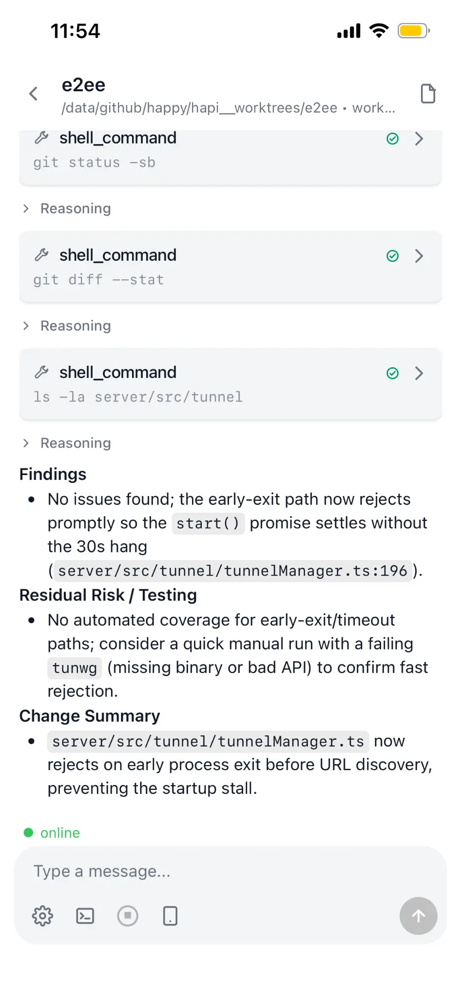
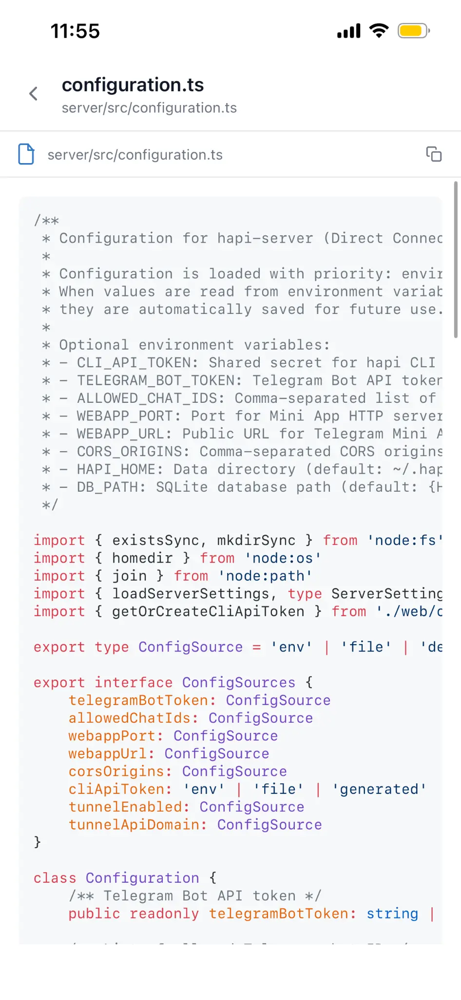

提交前，换个模型评审
在 Claude Code 里改完代码，让 Codex 直接读当前目录，评审还没提交的改动，按要求只写报告、不改文件。只装了一种工具，就让它自己再开一个评审。
本机共享目录 · 看得到未提交的改动Runweft 通过 MCP 给 Codex 和 Claude Code 加上任务委派。
在当前对话里把工作交给你配置好的 Agent，
在本机或另一台机器上执行，完成后取回报告、代码和附件。
 经 Hub 派到本机
经 Hub 派到本机典型用法
主 Agent 是你正在对话的 Codex 或 Claude Code，负责拆任务、审结果。
动手的是 Hub 里配置的 Agent：一项职责，加上执行它的工具。
Hub 是 Runweft 管理机器、Agent 和任务的服务。
在 Claude Code 里改完代码，让 Codex 直接读当前目录，评审还没提交的改动，按要求只写报告、不改文件。只装了一种工具，就让它自己再开一个评审。
本机共享目录 · 看得到未提交的改动比如“给导出接口加分页并补测试”。任务在独立 worktree（从已提交版本建出的单独目录）里完成，代码以 Git 提交取回，你审过再合入。
本机独立 worktree · 从已提交版本开始全量测试、Linux 构建这类活，可以派给接在同一个 Hub 上的另一台机器。它从你指定的提交建好目录再开跑，报告和附件回到当前对话。
远端独立 worktree · 先把机器接入 Hub原生执行
Runweft 的执行层基于 HAPI，由它启动原生的 Codex 或 Claude Code。
会话、工具和审批都用它们自己的，不另起一套；
HAPI 现成的会话网页，也一并可以用。
任务在哪台机器执行，就用那台机器上已登录的 Codex / Claude Code，连同项目指令、Skill 和其他 MCP，不用为委派单独再配一遍。
以执行机器上的配置为准Runweft 不改 Codex / Claude Code 的权限设置，要不要审批由它们自己的配置决定。需要审批时，那一步会停下等你，任务标为“需要处理”，主 Agent 等待时也能看到。
原生权限 · 网页审批每轮结束会关闭执行进程，但原生会话和工作目录都保留。下一轮通常回到原来的会话，前面的上下文和改动都在；启动配置改了或会话已丢失，才会换新会话。
会话和目录跨轮保留HAPI 会话网页
Runweft 任务页记录每一轮的状态和报告；想看细节，从任务详情打开这项任务的原生会话和文件。
手机上也一样：用浏览器打开能访问的 Hub 地址，导入你的身份、选同一个空间。
以下是 HAPI 官方截图，展示 Runweft 复用的会话和文件界面。实际界面以所用版本为准。

查看原图消息、工具调用和最终报告按顺序呈现。

查看原图从会话中打开文件查看内容；会话在线时才能读取。
一次委派的经过
告诉主 Agent 要做什么。它从 Hub 里挑合适的 Agent，必要时把任务拆开，再派出去。
共享目录直接用当前项目；独立 worktree 先从已提交的版本建好目录、放好输入文件，再启动执行工具。
主 Agent 等待并读取进度，需要时处理审批或中断。过程也能在 Hub 任务页查看。
报告回到当前对话，代码和附件取回本机，审过再合入。要接着改就发下一轮，会话和目录都还在。
开始接入
告诉它连哪个 Hub；第一次用，就在本机启动一个。
在浏览器里创建身份并确认，token 自己保存，不发给模型。
装好后在项目目录重开客户端，发出第一条委派。
帮我接入 Runweft。用 npm 全局安装 runweft@{{VERSION}}，读取包里自带的 Runweft Skill，按它的说明完成接入；以后升级和卸载也都用 npm。动手前先检查我已有的安装和配置，其他 MCP、Skill 和模型设置保持不变，要替换内容不同的 Runweft Skill 时先备份并问我。如果我给了 Hub 地址就连接它，没给就先问我是否在本机启动一个。身份由我在浏览器里创建或导入并确认，不要向我索要 token。然后登记这台机器和我已登录的 Codex 或 Claude Code，创建一个只写报告、不改代码的代码评审 Agent。最后装好 Runweft MCP，提醒我在项目目录重开客户端，并告诉我重开后发什么来完成第一次委派。Agent 会先检查你已有的安装。其他 MCP、Skill 和模型设置保持原样；要替换内容不同的 Runweft Skill，会先备份再问你。模型登录仍走 Codex / Claude Code 自己的流程。
在项目目录重新打开 Codex 或 Claude Code，发出这句。主 Agent 会把评审交给代码评审 Agent，等它完成并读回报告。
读到报告才算接入成功；MCP 连上还不算。
用 Runweft 里的代码评审 Agent 审查这个项目，在本机共享目录执行，这样它能看到我还没提交的改动。如果没有未提交的改动，就审查最近一次提交；如果这里不是 Git 项目，先问我要审查哪些代码。只读审查，不要修改任何文件。等任务完成后读回报告，按严重程度列出需要我处理的问题。手动安装 / v{{VERSION}}
所有支持的平台都用这一条，npm 会自动选平台依赖。
配套的 HAPI 和 Skill 已经在包里。
装好之后，接入照样可以交给上面那段提示。
{{NPM_INSTALL}}新终端里找不到 runweft？确认 npm 全局目录下的 bin 在 PATH 里。怎么检查
Hub 放在哪里
Hub 负责身份、机器、Agent 和任务，每次委派都要经过它。
第一次用，让 Agent 在本机启动一个；
团队已有 Hub，直接连它的地址。
Agent 在你的电脑上启动 Hub，引导你在浏览器创建身份，再登记这台机器和工具。它和团队 Hub 是同一套服务，同样要身份和登记，不是离线模式。
各台机器连到同一个 Hub，任务就能派到合适的那台，在独立 worktree 里执行，成果经 Hub 取回。执行能力可以分享给空间成员，你的私有 Agent 和任务不会因此公开。
常见问题
不用，装好并登录你在用的那一个就行。两个都有时，也可以跨工具委派，比如在 Claude Code 里发起、交给 Codex 执行。由哪个工具执行，取决于 Hub 中这个 Agent 绑定的 runtime，也就是某台机器上登记过的 Codex 或 Claude Code。
不要。身份在浏览器里由你创建或导入，确认后凭据直接加密送到本机，不经过模型。token 副本请自己保存好：全部丢失后原身份无法找回，重新领取的身份也不会带上原来的空间和配置。
共享目录模式不需要 Git，读的就是当前目录，包括未提交的改动。独立 worktree 和所有远端任务要求项目是 Git 仓库，从已提交的版本开始；未提交的文件、本机装好的依赖和模型凭据都不会自动带过去，依赖由执行的 Agent 自己安装。
“只读”是写给执行 Agent 的要求，不是技术限制。执行时沿用那台机器上 Codex / Claude Code 的原生权限，Runweft 不另加沙箱。不想让任务碰当前目录，就改用独立 worktree。
不会。Runweft 把代码成果取回到你的仓库，并保留 worktree；审查、merge 或 cherry-pick、处理冲突和推送，由你和主 Agent 决定。
能继续。每轮结束会关闭执行进程，但会话和 worktree 都保留，下一轮优先在原现场接着做。被委派的 Agent 里不启用 Runweft MCP，不会层层再派；Codex / Claude Code 自带的子代理功能照常可用。
Runweft 默认用 ~/.runweft，运行 runweft paths 可以看到实际位置。Codex / Claude Code 的配置和会话仍在原来的位置。安装 MCP 前会备份相关配置，其他 MCP 和原生设置保持不变。
都用 npm。升级前先结束正在跑的任务、停掉服务，装好新版本后让 Agent 更新 MCP 入口和包里的 Skill，再重启检查。卸载时先移除 Runweft MCP、停掉服务，再执行 npm uninstall -g runweft；你的数据、模型凭据和其他设置都会保留。
把接入提示交给 Agent，重开客户端后发出第一条委派。